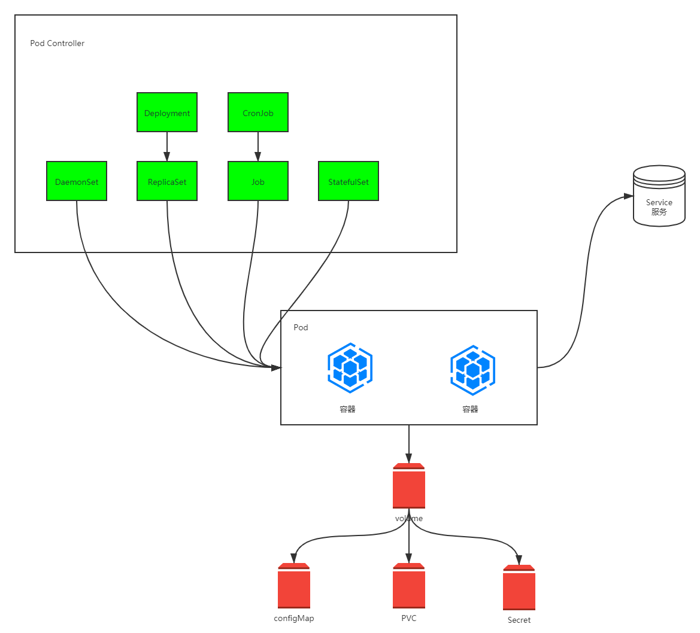

资源管理介绍
在Kubernetes中，所有的内容都抽象为资源，用户需要通过操作资源来管理Kubernetes。
学习kubernetes的核心，就是学习如何对集群中的Pod、Pod控制器、Service、存储等各种资源进行操作。
- Kubernetes的本质就是一个集群系统，用户可以在集群中部署各种服务。所谓的部署服务，其实就是在Kubernetes集群中运行一个个的容器，并将指定的程序跑在容器中。
- Kubernetes的最小管理单元是
Pod而不是容器，所以只能将容器放在Pod中，而Kubernetes一般也不会直接管理Pod，而是通过Pod控制器来管理Pod的.
Pod提供服务之后，就需要考虑如何访问Pod中的服务，Kubernetes提供了Service资源实现这个功能。- 当然，如果
Pod中程序的数据需要持久化，Kubernetes还提供了各种存储系统。

资源管理方式
- 命令式对象管理：直接使用命令去操作kubernetes的资源
1
| kubectl run nginx-pod --image=nginx:1.17.1 --port=80
|
- 命令式对象配置：通过命令配置和配置文件去操作kubernetes的资源
1
| kubectl create/patch -f nginx-pod.yaml
|
- 声明式对象配置：通过apply命令和配置文件去操作kubernetes的资源
1
| kubectl apply -f nginx-pod.yaml
|
| 管理方式 |
操作 |
适用场景 |
优点 |
缺点 |
| 命令式对象管理 |
对象 |
测试 |
简单 |
只能操作活动对象，无法审计、跟踪 |
| 命令式对象配置 |
文件 |
开发 |
可以审计，追踪 |
项目大的时候，配置文件多，操作麻烦 |
| 声明式对象配置 |
目录 |
开发 |
支持目录操作 |
意外情况下难以调试 |
命令式对象管理
kubectl命令
kubectl是kubernetes集群的命令行工具，通过它能够对集群本身进行管理，并能够在集群上进行容器化应用的安装和部署。
命令的语法如下
1
| kubectl [command] [type] [name] [flags]
|
- command：指定要对资源执行的操作，比如create、get、delete
- type：指定资源的类型，比如deployment、pod、service
- name：指定资源的名称，名称大小写敏感
- flags：指定额外的可选参数
操作（command）
kubernetes允许对资源进行多种操作，可以通过–help查看详细的操作命令
基本命令
| 命令 |
翻译 |
作用 |
| create |
创建 |
创建一个资源 |
| edit |
编辑 |
编辑一个资源 |
| get |
获取 |
获取一个资源 |
| patch |
更新 |
更新一个资源 |
| delete |
删除 |
删除一个资源 |
| explain |
解释 |
展示资源文档 |
运行和调试
| 命令 |
翻译 |
作用 |
| run |
运行 |
在集群中运行一个指定的镜像 |
| expose |
暴露 |
暴露资源为Service |
| describe |
描述 |
显示资源内部信息 |
| logs |
日志 |
输出容器在Pod中的日志 |
| attach |
追加 |
进入运行中的容器 |
| exec |
执行 |
执行容器中的一个命令 |
| cp |
负责 |
在Pod内外复制文件 |
| rollout |
回滚 |
管理资源的发布 |
| scale |
扩缩容 |
扩（缩）容Pod的数量 |
| autocale |
自动扩缩容 |
自动调整Pod的数量 |
高级命令
| 命令 |
翻译 |
作用 |
| apply |
应用 |
通过文件对资源进行配置 |
| label |
标签 |
更新资源上的标签 |
其他命令
| 命令 |
翻译 |
作用 |
| cluster-info |
集群信息 |
显示集群信息 |
| version |
版本 |
显示当前Client和Server的版本 |
资源类型（type）
kubernetes中所有的内容都抽象为资源，可以通过下面的命令进行查看
下面列举一下常用的资源
集群级别资源
| 名称 |
缩写 |
作用 |
| nodes |
no |
集群组成部分 |
| namespaces |
ns |
隔离Pod |
Pod资源
Pod资源控制器
| 名称 |
缩写 |
作用 |
| replicationcontrollers |
rc |
控制Pod资源 |
| replicasets |
rs |
控制Pod资源 |
| deployments |
deploy |
控制Pod资源 |
| daemonsets |
ds |
控制Pod资源 |
| jobs |
|
控制Pod资源 |
| cronjobs |
cj |
控制Pod资源 |
| horizontalpodautoscalers |
hpa |
控制Pod资源 |
| statefulsets |
sts |
控制Pod资源 |
服务发现资源
| 名称 |
缩写 |
作用 |
| services |
svc |
统一Pod对外接口 |
| ingress |
ing |
统一Pod对外接口 |
存储资源
| 名称 |
缩写 |
作用 |
| volumeattachments |
|
存储 |
| persistentvolumes |
pv |
存储 |
| persistentvolumeclaims |
pvc |
存储 |
配置资源
| 名称 |
缩写 |
作用 |
| configmaps |
cm |
配置 |
| secrets |
|
配置 |
示例
1
2
3
4
5
| kubectl create ns dev
kubectl run nginx --image=nginx:1.17.1 -n dev
kubectl get pods -n dev
kubectl delete pod nginx -n dev
kubectl delete ns dev
|
命令式对象配置
通过命令配置和配置文件去操作kubernetes的资源
命令式对象配置的方式操作资源，可以简单的认为：命令+yaml配置文件（里面是命令需要的各种参数）
新建一个 nginxpod.yaml 文件，内容如下：
1
2
3
4
5
6
7
8
9
10
11
12
13
14
| apiVersion: v1
kind: Namespace
metadata:
name: dev
---
apiVersion: v1
kind: Pod
metadata:
name: nginxpod
namespace: dev
spec:
containers:
- name: nginx-containers
image: nginx:1.17.1
|
1
2
3
4
5
6
7
8
| # 创建
kubectl create -f nginxpod.yaml
# 查看
kubectl get -f nginxpod.yaml
# 删除
kubectl delete -f nginxpod.yaml
|
声明式对象配置
通过apply命令和配置文件去操作kubernetes的资源。
声明式对象配置和命令式对象配置类似，只不过它只有一个apply命令。
apply相当于create和patch。
声明式对象配置就是使用apply描述一个资源的最终状态（在yaml中定义状态）
我们继续使用上面 nginxpod.yaml
1
| kubectl apply -f nginxpod.yaml
|
使用方式推荐
- 创建和更新资源使用声明式对象配置：kubectl apply -f xxx.yaml。
- 删除资源使用命令式对象配置：kubectl delete -f xxx.yaml。
- 查询资源使用命令式对象管理：kubectl get(describe) 资源名称。